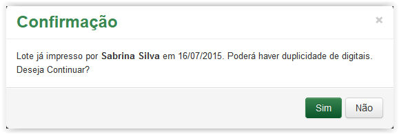

Imprimir lote de digitais
Para imprimir as digitais disponíveis de um determinado lote, clique na opção Gerar, no Menu do Sistema SGDoc:
Menu do sistema SGDoc
A tela Pesquisar Digital é apresentada:
Tela Pesquisar Digital
Informações para pesquisar digitais:
Tipo de Digital: |
Tipo da digital: Física ou Eletrônica |
Unidade: |
Unidade da pessoa logada no sistema |
Lote: |
Lote com NUP ou sem NUP |
 Preenchendo o filtro para pesquisar digitais!!
Preenchendo o filtro para pesquisar digitais!!
Tela Pesquisar Digital - Selecionando uma opção no campo Tipo de Digital
Tela Pesquisar Digital - Selecionando uma opção no campo Lote
 para limpar os campos do filtro de pesquisa e selecionar novos valores. Ou então, clique no botão para efetuar a pesquisa:
para limpar os campos do filtro de pesquisa e selecionar novos valores. Ou então, clique no botão para efetuar a pesquisa:Tela Pesquisar Digital
Tela Pesquisar Digital - clicando no botão Imprimir - digital com NUP
Tela Pesquisar Digital - clicando no botão Imprimir - digital sem NUP

Mensagem de confirmação
Digitais com NUP

Digitais sem NUP
As folhas de etiquetas utilizadas na impressão devem ser solicitadas ao SEDOC ou ao almoxarifado. As especificações são as seguintes:
A folha deverá ser colocada na bandeja manual da impressora com as etiquetas viradas para cima. A imagem abaixo mostra onde está localizada a bandeja manual:
Bandeja manual da Impressora
Clique no ícone da tela abaixo:
Clicando no ícone de Imprimir
É apresentada a tela de configuração para impressão das digitais:
Tela de configuração de impressão
Na página de configuração de impressão deverão ser observados os seguintes itens:
Ao clicar no botão as digitais serão enviadas para impressora.
IMPORTANTE!!
 Nota 1:
Nota 1:
Caso a coluna Digitais Disponíveis esteja em branco, o usuário deverá solicitar, por meio da funcionalidade Suporte ao Usuário, a liberação de novo lote. Apenas o Gerenciador do Sistema (SGI) poderá gerar o lote de Digitais para que o usuário imprima e utilize.
Created with the Personal Edition of HelpNDoc: Easy EPub and documentation editor